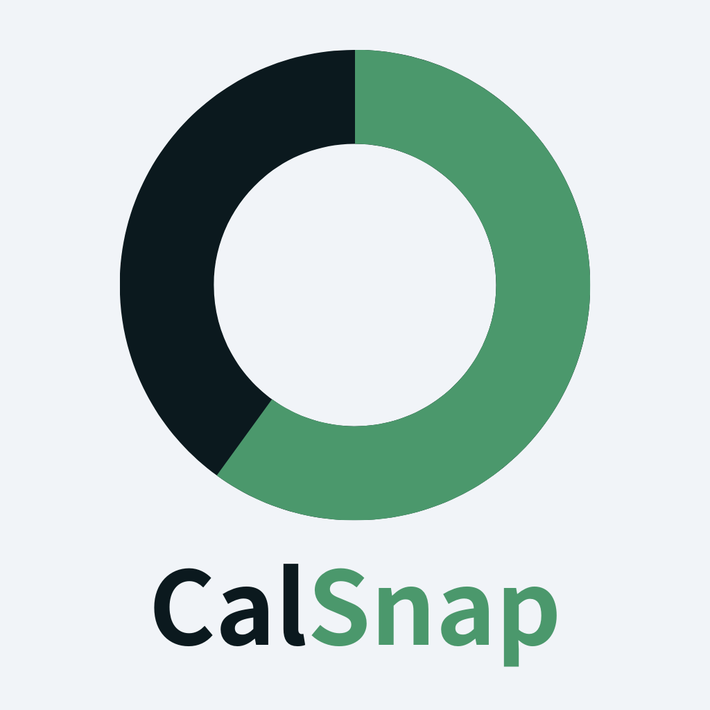

利用規約
この利用規約（以下、「本規約」といいます。）は、CalSnap運営事務局（以下、「当運営者」といいます。）がこのウェブサイト上で提供するサービス（以下、「本サービス」といいます。）の利用条件を定めるものです。登録ユーザーの皆さま（以下、「ユーザー」といいます。）には、本規約に従って、本サービスをご利用いただきます。
本規約をよくお読みいただき、同意の上ご利用いただくようお願い申し上げます。万一ご同意いただけない場合は、大変申し訳ございませんがご利用をお控えください。
ご利用いただいた場合には、下記の条件すべてにご同意いただいたものとして取り扱わせていただきます。
第1条（適用）
- 本規約は、ユーザーと当運営者との間の本サービスの利用に関わる一切の関係に適用されるものとします。
- 当運営者は本サービスに関し、本規約のほか、ご利用にあたってのルール等、各種の定め（以下、「個別規定」といいます。）をすることがあります。これら個別規定はその名称のいかんに関わらず、本規約の一部を構成するものとします。
- 本規約の規定が前条の個別規定の規定と矛盾する場合には、個別規定において特段の定めなき限り、個別規定の規定が優先されるものとします。
第2条（利用登録）
- 本サービスにおいては、登録希望者が本規約に同意の上、当運営者の定める方法によって利用登録を申請し、当運営者がこれを承認することによって、利用登録が完了するものとします。
- 当運営者は、利用登録の申請者に以下の事由があると判断した場合、利用登録の申請を承認しないことがあり、その理由については一切の開示義務を負わないものとします。
- 利用登録の申請に際して虚偽の事項を届け出た場合
- 本規約に違反したことがある者からの申請である場合
- その他、当運営者が利用登録を相当でないと判断した場合
第3条（ユーザーIDの管理）
- ユーザーは、自己の責任において、本サービスのユーザーIDを適切に管理するものとします。
- ユーザーは、いかなる場合にも、ユーザーIDを第三者に譲渡または貸与し、もしくは第三者と共用することはできません。当運営者は、ユーザーIDが登録情報と一致してログインされた場合には、そのユーザーIDを登録しているユーザー自身による利用とみなします。
- ユーザーIDが第三者によって使用されたことによって生じた損害は、当運営者に故意又は重大な過失がある場合を除き、当運営者は一切の責任を負わないものとします。
第4条（利用料金等）
- 本サービスは、契約者が利用を希望するサービス内容により、無料サービスと有料サービスに分かれるものとします。
- ユーザーは、本規約及び当運営者が別途定める条件に従い、有料サービスの対価として、当運営者が指定する利用料金を支払うものとします。
- 前項に定める料金の支払方法は、クレジットカードによる支払とします。
- クレジットカードによる支払は、当運営者所定の方法により、当運営者所定の期日までにクレジットカード決済の手続きを行うものとします。ユーザーは、自身のクレジットカードの情報に変更があった場合は速やかにその変更情報を当運営者所定の手続きにより当運営者に報告するものとし、当運営者へ届け出た情報が常に最新の情報であることを保証するものとします。当運営者は、登録されたクレジットカードによる支払いが不能である等の理由により、当運営者の指定する方法に従った利用料金の支払がなされなかった場合、支払いがなされるまでの間、本サービスの提供停止、当該ユーザーの本サービスの全部もしくは一部へのアクセスの拒否・利用停止等の措置をとることができるものとします。
- ユーザーが利用料金の支払いを遅延した場合には、ユーザーは、当運営者に対して年率6％の割合による遅延損害金を支払うものとします。
- 当運営者は、如何なる場合においても、利用料金の返金は行わないものとします。ユーザーが使用するコンピューターやネットワーク環境の影響により、本サービスを利用できない等の問題が発生した場合や、ユーザーが本サービスの利用禁止処分等を受けた場合には、当運営者は、利用料金の返還は行わず、これによりユーザーに生じたすべての損害について、一切の責任を負いません。
- 不正な方法による、利用料金の支払いや利用料金の不払いが判明した場合、当運営者は、ユーザーに対し、ユーザー登録の取消、本サービスの全部もしくは一部へのアクセスの拒否・利用停止等の措置をとった上で、生じた損害の賠償を求めることができるものとします。
- 当運営者は、本条に定める措置により生じる損害について、一切の責任を負わないものとします。
第5条（禁止事項）
ユーザーは、本サービスの利用にあたり、以下の行為をしてはなりません。
- 法令または公序良俗に違反する行為
- 犯罪行為に関連する行為
- 本サービスの内容等、本サービスに含まれる著作権、商標権ほか知的財産権を侵害する行為
- 当運営者、ほかのユーザー、またはその他第三者のサーバーまたはネットワークの機能を破壊したり、妨害したりする行為
- 本サービスによって得られた情報を商業的に利用する行為
- 当運営者のサービスの運営を妨害するおそれのある行為
- 不正アクセスをし、またはこれを試みる行為
- 他のユーザーに関する個人情報等を収集または蓄積する行為
- 不正な目的を持って本サービスを利用する行為
- 本サービスの他のユーザーまたはその他の第三者に不利益、損害、不快感を与える行為
- 他のユーザーに成りすます行為
- 当運営者が許諾しない本サービス上での宣伝、広告、勧誘、または営業行為
- 面識のない異性との出会いを目的とした行為
- 当運営者のサービスに関連して、反社会的勢力に対して直接または間接に利益を供与する行為
- その他、当運営者が不適切と判断する行為
第6条（本サービスの提供の停止等）
- 当運営者は、以下のいずれかの事由があると判断した場合、ユーザーに事前に通知することなく本サービスの全部または一部の提供を停止または中断することができるものとします。
- 本サービスにかかるコンピュータシステムの保守点検または更新を行う場合
- 地震、落雷、火災、停電または天災などの不可抗力により、本サービスの提供が困難となった場合
- コンピュータまたは通信回線等が事故により停止した場合
- その他、当運営者が本サービスの提供が困難と判断した場合
- 当運営者は、本サービスの提供の停止または中断により、ユーザーまたは第三者が被ったいかなる不利益または損害についても、一切の責任を負わないものとします。
第7条（利用制限および登録抹消）
- 当運営者は、ユーザーが以下のいずれかに該当する場合には、事前の通知なく、ユーザーに対して、本サービスの全部もしくは一部の利用を制限し、またはユーザーとしての登録を抹消することができるものとします。
- 本規約のいずれかの条項に違反した場合
- 登録事項に虚偽の事実があることが判明した場合
- 料金等の支払債務の不履行があった場合
- 当運営者からの連絡に対し、一定期間返答がない場合
- 本サービスについて、最終の利用から一定期間利用がない場合
- 本サービスの利用するデータベースの制約を超えるリクエストが生じた場合
- その他、当運営者が本サービスの利用を適当でないと判断した場合
- 当運営者は、本条に基づき当運営者が行った行為によりユーザーに生じた損害について、一切の責任を負いません。
第8条（退会）
- ユーザーは、当運営者の定める退会手続により、本サービスから退会できるものとします。
- 当運営者は、本条の措置により生じる損害について、一切の責任を負わないものとします。
第9条（保証の否認および免責事項）
- 当運営者は、本サービスに事実上または法律上の瑕疵（安全性、信頼性、正確性、完全性、有効性、特定の目的への適合性、セキュリティなどに関する欠陥、エラーやバグ、権利侵害などを含みます。）がないことを明示的にも黙示的にも保証しておりません。
- 当運営者は、本サービスに起因してユーザーに生じたあらゆる損害について一切の責任を負いません。ただし、本サービスに関する当運営者とユーザーとの間の契約（本規約を含みます。）が消費者契約法に定める消費者契約となる場合、この免責規定は適用されません。
- 前項ただし書に定める場合であっても、当運営者は、当運営者の過失（重過失を除きます。）による債務不履行または不法行為によりユーザーに生じた損害のうち特別な事情から生じた損害（当運営者またはユーザーが損害発生につき予見し、または予見し得た場合を含みます。）について一切の責任を負いません。また、当運営者の過失（重過失を除きます。）による債務不履行または不法行為によりユーザーに生じた損害の賠償は、ユーザーから当該損害が発生した月に受領した利用料の額を上限とします。
- 当運営者は、本サービスに関して、ユーザーと他のユーザーまたは第三者との間において生じた取引、連絡または紛争等について一切責任を負いません。
第10条（サービス内容の変更等）
当運営者は、ユーザーに通知することなく、本サービスの内容を変更しまたは本サービスの提供を中止することができるものとし、これによってユーザーに生じた損害について一切の責任を負いません。
第11条（利用規約の変更）
当運営者は、必要と判断した場合には、ユーザーに通知することなくいつでも本規約を変更することができるものとします。なお、本規約の変更後、本サービスの利用を開始した場合には、当該ユーザーは変更後の規約に同意したものとみなします。
第12条（個人情報の取扱い）
当運営者は、本サービスの利用によって取得する個人情報については、当運営者「プライバシーポリシー」に従い適切に取り扱うものとします。
第13条（通知または連絡）
ユーザーと当運営者との間の通知または連絡は、当運営者の定める方法によって行うものとします。当運営者はユーザーから、当運営者が別途定める方式に従った変更届け出がない限り、現在登録されている連絡先が有効なものとみなして当該連絡先へ通知または連絡を行い、これらは、発信時にユーザーへ到達したものとみなします。
第14条（権利義務の譲渡の禁止）
ユーザーは、当運営者の書面による事前の承諾なく、利用契約上の地位または本規約に基づく権利もしくは義務を第三者に譲渡し、または担保に供することはできません。
第15条（準拠法・裁判管轄）
- 本規約の解釈にあたっては、日本法を準拠法とします。
- 本サービスに関して紛争が生じた場合には、当運営者の本店所在地を管轄する裁判所を専属的合意管轄とします。
以上
2024年12月14日 制定